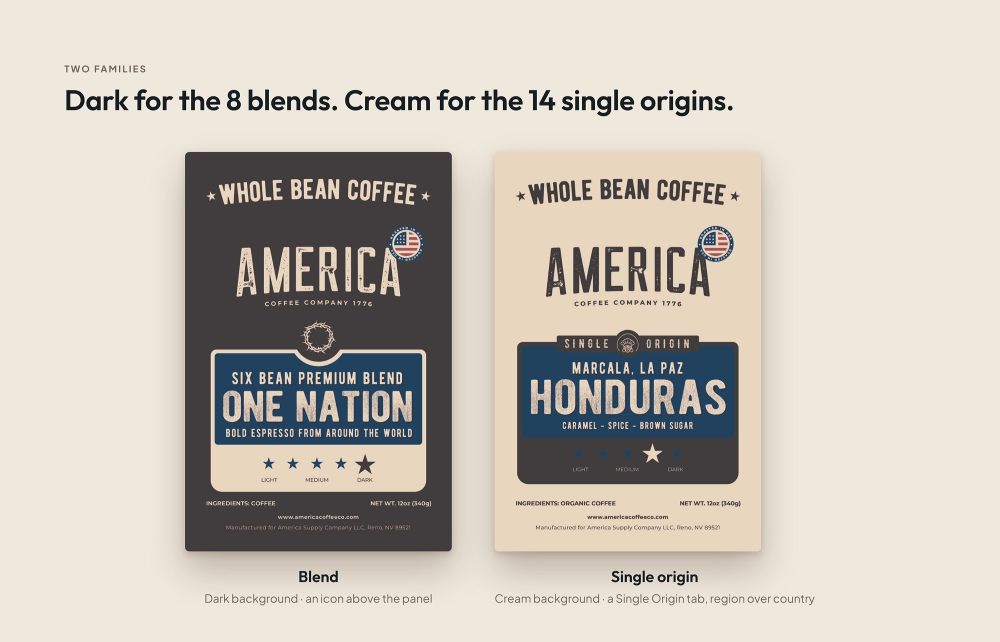
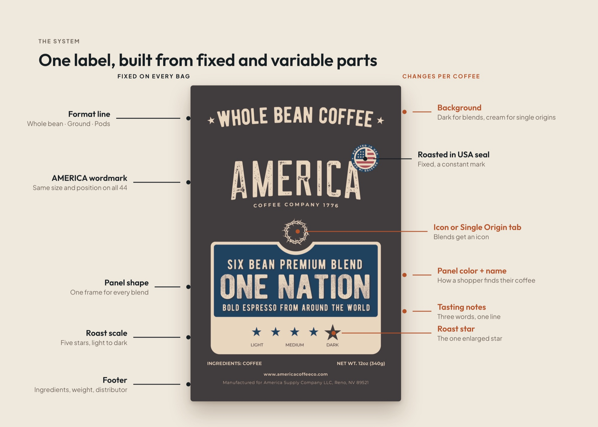
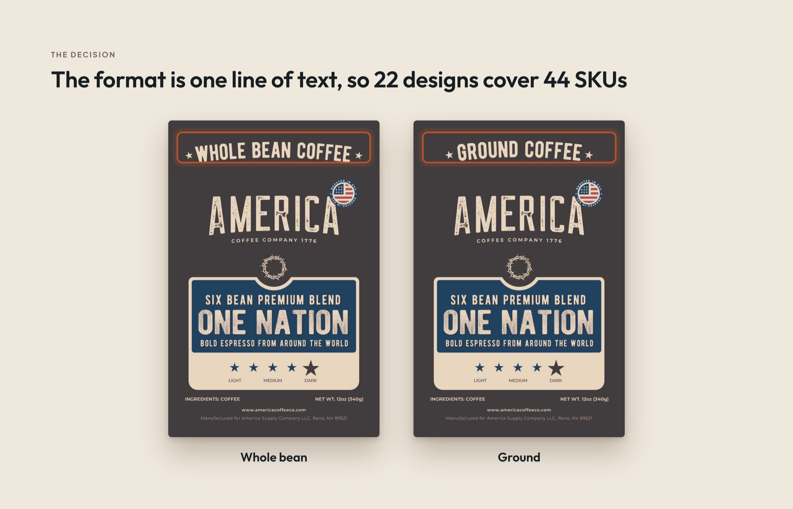
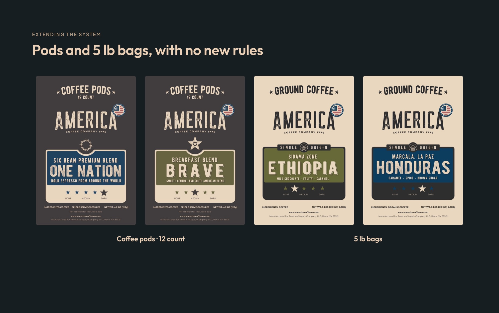
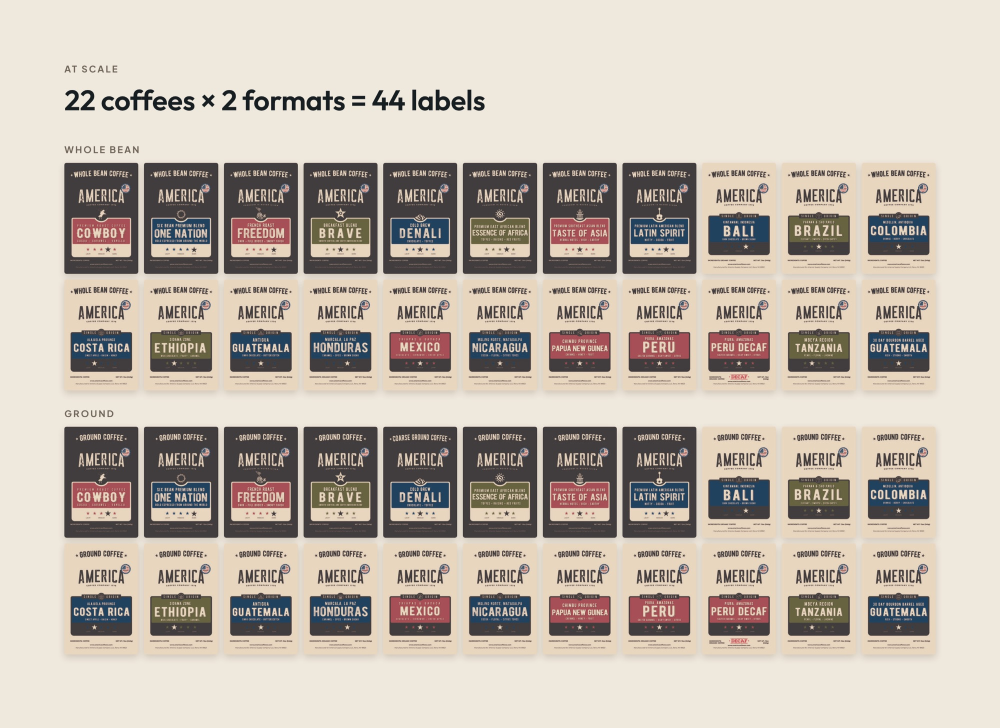

22 coffees, 44 SKUs, one system on the shelf.
America Coffee Co. is a U.S. coffee brand that needed a rebrand able to carry its whole line. That meant 8 blends and 14 single origins, each sold whole bean and ground. Every bag had to read as one company, and a shopper still had to find their coffee at a glance.

The brief
[Why America Coffee rebranded now, and what wasn’t working with the old packaging]
A system, not a label
One label is a design job. Forty-four labels that have to feel like one company, and still let someone pick the right coffee off a crowded shelf, are a systems problem. Every decision had to work 44 times, in print, at production scale. So I designed the rules first and the labels second.
Two families, readable from across the aisle
The line splits naturally into blends and single origins, so the system does too. The 8 blends sit on a dark background with an icon above the name panel. The 14 single origins sit on cream, with a “Single Origin” tab and the region set above the country. A shopper can tell which kind of coffee they’re holding before reading a word.

What stays fixed, what changes
Every label is built from the same parts. Some are fixed on every bag. A few change per coffee, and those are the ones a shopper uses to find theirs.
- Fixed on all 44: the format line, the AMERICA wordmark at the same size and position, the name panel’s shape, the five-star roast scale, the Roasted in USA seal and the footer.
- Changes per coffee: the background, the icon or Single Origin tab, the panel color and name, three tasting notes on one line, and the one enlarged star that marks the roast.

The decision I’d defend
Whole bean and ground are the same coffee, so I made the format a single line of text at the top of the label and kept everything else identical. That means 22 designs cover all 44 SKUs. Each new coffee is one design, not two. There are half as many files to keep correct, and nothing can drift between the two versions of the same coffee.

The test: new formats, no new rules
The real test of a system is what happens when the brief grows. When the line expanded to 12-count coffee pods and 5 lb bags, both fit the existing rules without changes. Same wordmark, same panel, same roast scale, just a different format line and size.

Into production
I prepared the production files for every SKU myself, so what went to print matched what was designed.
[Printer, materials and proofing: what you checked before the line went to press]

What changed
All 44 SKUs went into production on the new system, and it has since absorbed two new formats without a single new rule.
[A result you can back up, such as sales, new stockists or reorders, or cut this line]
[Client quote, with name and title, if you can get one]